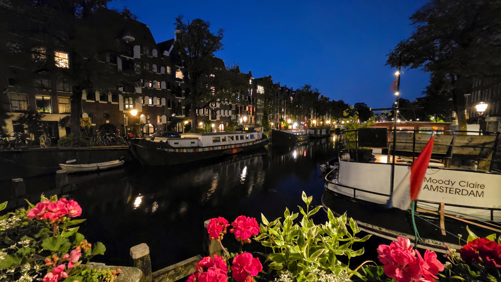

Amsterdam · On the edge of the Jordaan
A quiet home.
Above the city.
A lived-in attic with wooden floors, collected furniture and a small private terrace.
Come inside
01 bedroomFor one person or a couplePrivate terraceA direct home exchange
A closer look
Collected over time.
Made to live in.
Art, warm wood, daylight and a few favourite corners. Take a look around.
The city, on your doorstep
Out for a walk.
Home for the evening.
Canals, cafés, independent shops and Westerpark are all part of the neighbourhood. A central base with a quieter place to come back to.
Around the neighbourhood